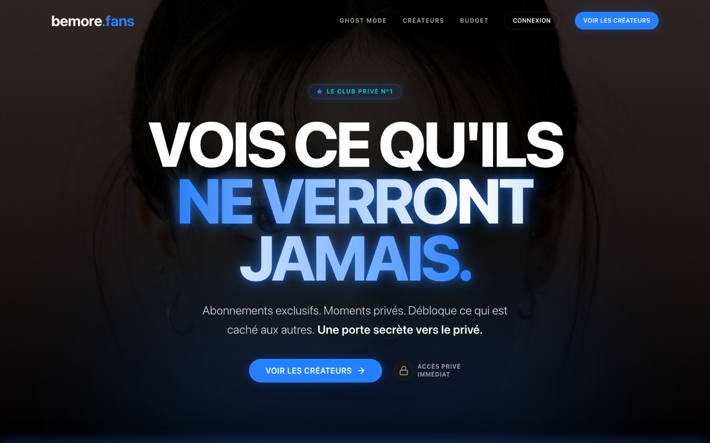

Étude de cas · produit en production
bemore.fans
Une plateforme d'abonnements pour créateurs, avec paiements récurrents, vérification d'âge et médias servis par URLs signées.
80+Écrans
430+Tests
54Modèles de données

Le produit
La plateforme devait gérer la relation entre créateurs et abonnés tout en protégeant les contenus et en sécurisant les parcours sensibles.
J'ai contribué au produit web et à son back-office : paiements récurrents, KYC et contrôle d'âge Yoti, médias S3 protégés, messagerie modérée et affiliation.
- Next.js, TypeScript, Prisma et PostgreSQL.
- URLs signées pour limiter l'accès aux médias.
- Un back-office complet pour les opérations quotidiennes.